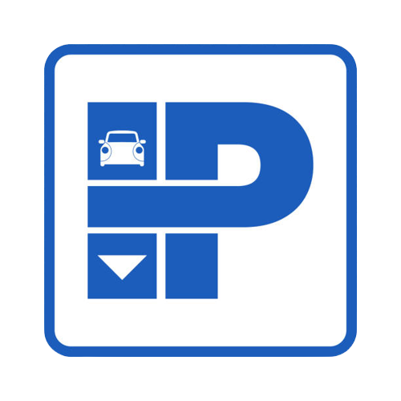

<ion-header>
  <ion-toolbar>
    <ion-buttons>
      <ion-back-button text="Atras" defauLtRef="/"  ></ion-back-button>
      <ion-title>Estacionamientos</ion-title>
    </ion-buttons>
  </ion-toolbar>

</ion-header>
<ion-content>
  <ion-title>Estacionamientos</ion-title>

  
  <ion-card *ngFor="let Est of estacionamiento" >
    
    
    <ion-card-header>
      
      <ion-card-title> {{Est.disponibilidad}}</ion-card-title>
      
    </ion-card-header>
  
    <ion-card-content>
     Dirección: {{Est.direccion}}
    </ion-card-content>
    <ion-button [routerLink]="['/ver-mapa/estacionamiento', Est.cod]" color="secondary">Ver mapa</ion-button>

  </ion-card>
</ion-content>
